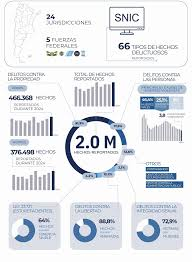

CIAC
Centro de Información y Análisis Criminal
Sistema Nacional de Información Criminal (SNIC SAT)
Conectado

Dashboard de estadísticas criminales
Plataforma Estadística Nacional
Sistema unificado de recolección, procesamiento y análisis de datos criminales para la toma de decisiones estratégicas.
+15M
Registros históricos
98.7%
Precisión en datos
Cada 1h
Actualización de datos
Dimensiones de Análisis
Territorial
- Por provincia/departamento
- Por comisaría/área operativa
- Por barrio/radio censal
Temporal
- Evolución histórica
- Variación interanual
- Análisis estacional
Delictiva
- Por tipo de delito
- Por modalidad
- Por víctima/victimario
Alertas Tempranas
Incremento Delictivo
Notificación cuando una zona supera el umbral estadístico establecido
Nuevas Modalidades
Detección de patrones delictivos no registrados previamente
Eficacia Operativa
Indicadores de desempeño policial por jurisdicción
Acceso Público
Datos estadísticos anonimizados disponibles para investigadores y ciudadanía:
Portal de Datos AbiertosLos datos personales y operativos sensibles están protegidos por ley y solo disponibles para organismos autorizados.